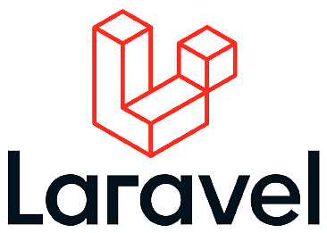
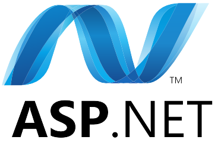
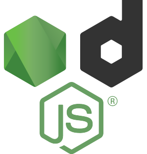
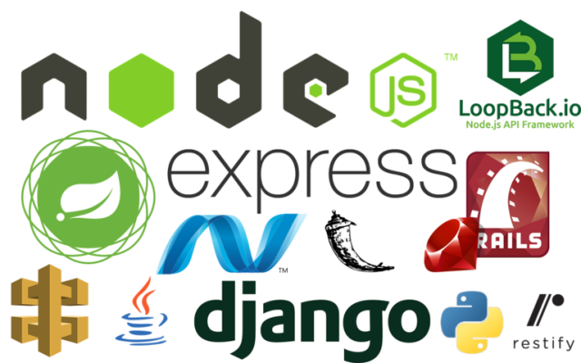
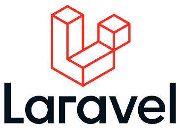
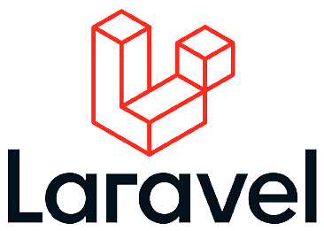
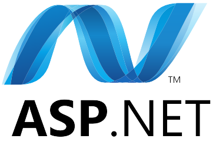
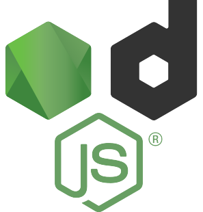
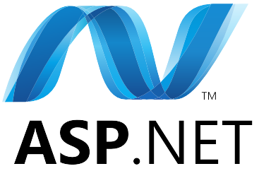
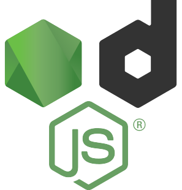

¡Potencia el manejo de tu informacion con los frameworks de desarrollo BackEnd!




Frameworks de desarrollo BackEnd
Los Frameworks de desarrollo BackEnd son herramientas que facilitan la creación y el desarrollo de aplicaciones
y sistemas en el lado del servidor. Estos frameworks ofrecen una serie de funcionalidades y estructuras
predefinidas que permiten a los desarrolladores implementar rápidamente características comunes en sus
aplicaciones web.
Algunos de los frameworks de desarrollo BackEnd más populares son:
Express.js
Django
Ruby on Rails
Laravel
ASP.NET
Estos frameworks ofrecen una base sólida para el desarrollo de aplicaciones BackEnd y pueden ser utilizados
según las necesidades y preferencias del desarrollador y del proyecto en particular. Cada uno tiene sus propias
características y ventajas, por lo que es importante evaluar cuál se ajusta mejor a los requerimientos
específicos del desarrollo BackEnd.


 


 


